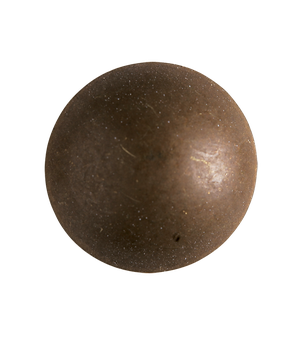

<div class="container">
  <div class="nails">
    
    
  </div>
  <h1 class="header">Todo List</h1>

  <ul class="todo-list">
    <li *ngFor="let item of todoList">
      <app-todo *ngIf="!filtered || !item.checked" [todoItem]="item" (remove)="removeItem($event)" (checkboxChange)="updateCompletedTodos($event)"></app-todo>
    </li>
  </ul>

  <div class="footer">
    <div class="counter">
      <div class="buttons">
        <button class="btn" (click)="openAddTaskModal()">Add task</button>
        <button class="btn" (click)="filterTasks()">{{!filtered ? 'Filter tasks' : 'Remove filter'}}</button>
        <button class="btn" (click)="restore()">Restore tasks</button>
      </div>
      <app-counter [totalTodos]="totalTodos" [completedTodos]="completedCounter"></app-counter>
    </div>
  </div>

</div>